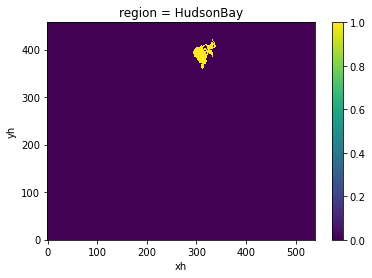
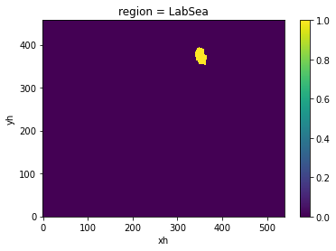

Test Grabbing MOM6 Grid¶
import matplotlib.pyplot as plt
import numpy as np
import xarray as xr
from mom6_tools.m6toolbox import genBasinMasks
static = xr.open_dataset(
"/glade/scratch/mlevy/archive/mom_hybrid_z/ocn/hist/mom_hybrid_z.mom6.static.nc"
)
depth = static.depth_ocean
depth = depth.fillna(0)
mask = genBasinMasks(static.geolon.values, static.geolat.values, depth.values, xda=True)
11.16427964664149 64.78854837178643 [391, 434]
for region in mask.region:
mask.sel(region=region).plot()
plt.show()
plt.close()

